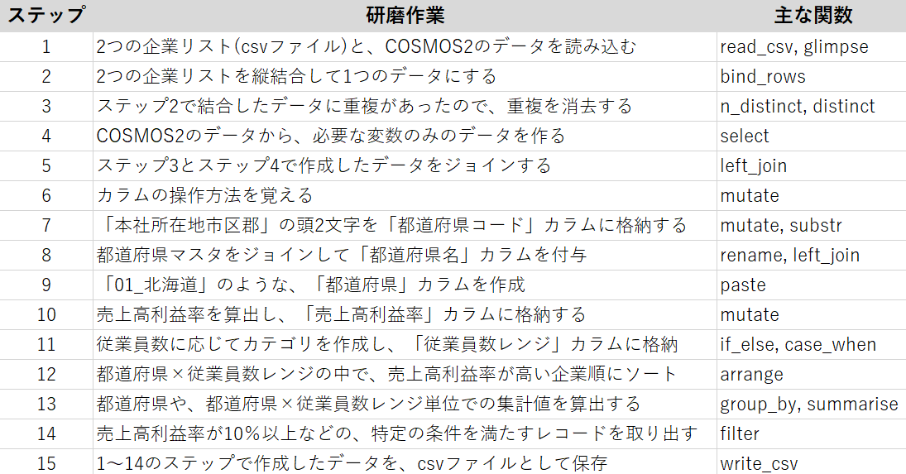

データ研磨スキル
[初級編後半]
2021/02/20
作業の確認
研磨ストーリー
顧客から受領した企業リストに対して企業概要データを付与し、データの集計表や指標を算出して顧客へ渡します。

作業イメージ
添えてある数字が各ステップに対応しています。

前半の成果物
企業コードをキーにしてdf_3_distinctとc2_201901_selectedを結合したdata_1を作成しました。
| data_1 | ||||||
|---|---|---|---|---|---|---|
| 企業コード | 本社所在地市区郡 | 業種大分類 | 資本金(千円) | 従業員数 | 最新期業績売上高(百万円) | 最新期業績税引後利益(千円) |
| J31299770 | 13103_東京都港区 | I:不動産業 | 931300 | 64 | 6555 | 910536 |
| E32002046 | 27123_大阪府大阪市淀川区 | L:サービス業 | 1098300 | 1120 | 100 | 1775694 |
| D42585413 | 13103_東京都港区 | J:運輸・通信業 | 6120900 | 216 | 31746 | 408523 |
| J39971897 | 13101_東京都千代田区 | L:サービス業 | 15432800 | 31059 | 334093 | 2544502 |
| J93122775 | 14102_神奈川県横浜市神奈川区 | F:製造業 | 9904900 | 314 | 69308 | 763986 |
| J34719839 | 13111_東京都大田区 | F:製造業 | 27761400 | 1167 | 54667 | 31954410 |
| L12571447 | 23105_愛知県名古屋市中村区 | G:卸売・小売業，飲食 | 131800 | 880 | 107643 | 7455793 |
| D42395106 | 13103_東京都港区 | G:卸売・小売業，飲食 | 1523000 | 1555 | 65714 | 1387429 |
| J34594067 | 13103_東京都港区 | E:建設業 | 8297700 | 452 | 63388 | 2149032 |
| E32304350 | 27126_大阪府大阪市平野区 | F:製造業 | 458000 | 801 | 40125 | 530833 |
| K01110418 | 13102_東京都中央区 | F:製造業 | 11610300 | 365 | 44279 | 2804433 |
| E32110564 | 27104_大阪府大阪市此花区 | F:製造業 | 9146900 | 486 | 71359 | 6506672 |
| E12517408 | 28201_兵庫県姫路市 | E:建設業 | 1132800 | 79 | 20300 | 1600471 |
| E32113347 | 27127_大阪府大阪市北区 | G:卸売・小売業，飲食 | 4053400 | 302 | 96496 | 913238 |
| J30505243 | 13103_東京都港区 | H:金融・保険業 | 1448400 | 346 | 10969 | 22448 |
| J34873560 | 12227_千葉県浦安市 | G:卸売・小売業，飲食 | 4569300 | 204 | 22993 | 1415250 |
| J39977283 | 13103_東京都港区 | G:卸売・小売業，飲食 | 246000 | 1338 | 24184 | 225865 |
| B02122602 | 34207_広島県福山市 | J:運輸・通信業 | 45597500 | 13645 | 100 | 11584519 |
| J34529468 | 13104_東京都新宿区 | F:製造業 | 3166100 | 895 | 26787 | 261723 |
| J36362624 | 13113_東京都渋谷区 | L:サービス業 | 14780400 | 1054 | 33010 | 4750633 |
| J34598062 | 13109_東京都品川区 | F:製造業 | 10348100 | 673 | 49987 | 1589201 |
| J34789669 | 22206_静岡県三島市 | F:製造業 | 655500 | 162 | 1237 | 1844422 |
| D82177528 | 11102_埼玉県さいたま市北区 | G:卸売・小売業，飲食 | 11203800 | 3828 | 325136 | 24136962 |
| E62123226 | 28110_兵庫県神戸市中央区 | J:運輸・通信業 | 37907900 | 3025 | 152859 | 27785573 |
| J34109661 | 13101_東京都千代田区 | F:製造業 | 31451600 | 3413 | 461075 | 63185341 |
| L82121236 | 24216_三重県伊賀市 | F:製造業 | 4035100 | 216 | 40114 | 2272837 |
| J34124165 | 13102_東京都中央区 | H:金融・保険業 | 9860900 | 368 | 8612 | 914978 |
| E32995244 | 27113_大阪府大阪市西淀川区 | F:製造業 | 1371100 | 332 | 6355 | 1005090 |
| D42265223 | 14102_神奈川県横浜市神奈川区 | G:卸売・小売業，飲食 | 4215900 | 970 | 60473 | 995979 |
| J34881765 | 13101_東京都千代田区 | F:製造業 | 518000 | 1062 | 65101 | 732120 |
| E32523679 | 27127_大阪府大阪市北区 | K:電気・ガス・水道・ | 274560500 | 39916 | 2639445 | 191071717 |
| D42093690 | 11219_埼玉県上尾市 | F:製造業 | 2387500 | 367 | 45837 | 540698 |
| J34512464 | 13107_東京都墨田区 | F:製造業 | 9345600 | 1013 | 26587 | 1352980 |
| E32119566 | 27227_大阪府東大阪市 | F:製造業 | 4827300 | 274 | 12865 | 7773787 |
| J34803363 | 13106_東京都台東区 | F:製造業 | 5229900 | 113 | 19812 | 1599935 |
| E42159736 | 25201_滋賀県大津市 | F:製造業 | 38393900 | 825 | 153467 | 54729062 |
| F92118101 | 20380_長野県上伊那郡 | F:製造業 | 1800900 | 602 | 15863 | 119657 |
| J34161865 | 13108_東京都江東区 | E:建設業 | 587600 | 876 | 29707 | 585028 |
| J36287728 | 13113_東京都渋谷区 | L:サービス業 | 1661000 | 521 | 34446 | 6019471 |
| J34887367 | 14207_神奈川県茅ヶ崎市 | F:製造業 | 21189400 | 734 | 119784 | 7205311 |
| B42504542 | 34102_広島県広島市東区 | G:卸売・小売業，飲食 | 14969400 | 1828 | 549883 | 44261837 |
| J32201436 | 13101_東京都千代田区 | J:運輸・通信業 | 3065900 | 15 | 59626 | 186881 |
| J34381066 | 13102_東京都中央区 | G:卸売・小売業，飲食 | 1593300 | 357 | 12778 | 793484 |
| E32129109 | 28202_兵庫県尼崎市 | F:製造業 | 8152300 | 249 | 25256 | 3228269 |
| J34751865 | 13102_東京都中央区 | F:製造業 | 4389400 | 746 | 33832 | 783540 |
| E42768626 | 26102_京都府京都市上京区 | F:製造業 | 3143100 | 332 | 8744 | 3152288 |
| E30971315 | 27128_大阪府大阪市中央区 | G:卸売・小売業，飲食 | 740000 | 33 | 18699 | 539378 |
| J34887766 | 13103_東京都港区 | F:製造業 | 28245200 | 536 | 396128 | 7942273 |
| F12183760 | 15106_新潟県新潟市南区 | G:卸売・小売業，飲食 | 31079600 | 4521 | 349321 | 8512802 |
| E32794904 | 13108_東京都江東区 | H:金融・保険業 | 21939800 | 363 | 5028 | 532019 |
| D42069420 | 14133_神奈川県川崎市中原区 | L:サービス業 | 278500 | 343 | 14507 | 1276802 |
| J34940466 | 13101_東京都千代田区 | F:製造業 | 82935900 | 4890 | 987787 | 21213347 |
| E42556694 | 26106_京都府京都市下京区 | L:サービス業 | 979200 | 760 | 8556 | 458470 |
| E32147647 | 27106_大阪府大阪市西区 | F:製造業 | 7838500 | 519 | 138481 | 6237376 |
| D42029989 | 14103_神奈川県横浜市西区 | G:卸売・小売業，飲食 | 10240500 | 573 | 140672 | 2555513 |
| D22165655 | 12217_千葉県柏市 | L:サービス業 | 601800 | 733 | 23109 | 4859821 |
| J34731169 | 13113_東京都渋谷区 | J:運輸・通信業 | 231966200 | 1754 | 255394 | 67533788 |
| B42539783 | 13101_東京都千代田区 | H:金融・保険業 | 153828200 | 1649 | 100 | 42189533 |
| E82193579 | 27144_大阪府堺市西区 | G:卸売・小売業，飲食 | 24150700 | 2466 | 466759 | 10237832 |
| F82182020 | 16201_富山県富山市 | K:電気・ガス・水道・ | 92062900 | 6839 | 193174 | -2695387 |
| E32110345 | 13101_東京都千代田区 | G:卸売・小売業，飲食 | 295027000 | 3376 | 5297577 | 293330719 |
| L42491454 | 23106_愛知県名古屋市中区 | E:建設業 | 252600 | 159 | 21383 | 808944 |
| L02645617 | 13101_東京都千代田区 | L:サービス業 | 24249100 | 1900 | 3269 | 1881133 |
| J34983560 | 12204_千葉県船橋市 | F:製造業 | 1413700 | 143 | 6505 | -540851 |
| E42659133 | 26106_京都府京都市下京区 | L:サービス業 | 244300 | 228 | 20908 | 204122 |
| J34171568 | 13102_東京都中央区 | G:卸売・小売業，飲食 | 4030700 | 1114 | 35323 | 794562 |
| J34647365 | 13101_東京都千代田区 | E:建設業 | 1390600 | 685 | 4378 | 1394617 |
| C82153425 | 43105_熊本県熊本市北区 | F:製造業 | 3261100 | 1649 | 78346 | 7435384 |
| J34414704 | 13111_東京都大田区 | L:サービス業 | 4975400 | 63 | 23586 | 6180762 |
| E32693531 | 28204_兵庫県西宮市 | G:卸売・小売業，飲食 | 4111300 | 888 | 296682 | 3943989 |
| J34601863 | 13113_東京都渋谷区 | F:製造業 | 6416100 | 1507 | 98350 | 3038153 |
| J34549760 | 13111_東京都大田区 | F:製造業 | 45665700 | 34617 | 2161788 | 180020060 |
| C42110360 | 40132_福岡県福岡市博多区 | L:サービス業 | 2198900 | 194 | 36462 | 3031812 |
| E32046058 | 27128_大阪府大阪市中央区 | F:製造業 | 8339300 | 1235 | 31980 | 4160782 |
| E12598679 | 28110_兵庫県神戸市中央区 | F:製造業 | 11966400 | 2544 | 128762 | 29605632 |
| L42193204 | 23109_愛知県名古屋市熱田区 | K:電気・ガス・水道・ | 39941000 | 2872 | 607757 | 4146133 |
| B12117505 | 13101_東京都千代田区 | F:製造業 | 9343000 | 1085 | 183683 | 34137854 |
| F22112890 | 15205_新潟県柏崎市 | F:製造業 | 586500 | 4343 | 84669 | 5415627 |
| L42120327 | 23228_愛知県岩倉市 | F:製造業 | 7717900 | 463 | 62486 | 590755 |
| J34891260 | 13104_東京都新宿区 | G:卸売・小売業，飲食 | 11709600 | 276 | 128887 | 3059422 |
| E32159275 | 27128_大阪府大阪市中央区 | G:卸売・小売業，飲食 | 7208800 | 239 | 243582 | 6248179 |
| K22100903 | 33202_岡山県倉敷市 | F:製造業 | 1794300 | 440 | 14785 | 3020310 |
| J30218155 | 13101_東京都千代田区 | L:サービス業 | 6192100 | 120 | 96094 | 19960809 |
| E32546894 | 28204_兵庫県西宮市 | F:製造業 | 1585900 | 273 | 12567 | 1265389 |
| J30572230 | 13101_東京都千代田区 | I:不動産業 | 2342600 | 11 | 22639 | 2552005 |
| D42029780 | 14102_神奈川県横浜市神奈川区 | G:卸売・小売業，飲食 | 1 | 8 | 64475 | 346674 |
| L42179046 | 23102_愛知県名古屋市東区 | G:卸売・小売業，飲食 | 12163200 | 4798 | 567262 | 13507229 |
| E62597994 | 28206_兵庫県芦屋市 | F:製造業 | 7014300 | 246 | 22666 | 2952611 |
| L42862459 | 23108_愛知県名古屋市瑞穂区 | I:不動産業 | 2536000 | 466 | 24333 | 870778 |
| L42105263 | 23115_愛知県名古屋市名東区 | G:卸売・小売業，飲食 | 2264700 | 219 | 21756 | -1646919 |
| E32297874 | 27128_大阪府大阪市中央区 | J:運輸・通信業 | 266500 | 276 | 15604 | 808139 |
| J30660549 | 13102_東京都中央区 | F:製造業 | 7808400 | 308 | 260044 | 5362516 |
| E32035549 | 13103_東京都港区 | G:卸売・小売業，飲食 | 30488600 | 843 | 1083467 | 3113049 |
| J34500137 | 13103_東京都港区 | F:製造業 | 1 | 43 | 17870 | 1966574 |
| E38816281 | 27128_大阪府大阪市中央区 | J:運輸・通信業 | 13100 | 506 | 19350 | 1631730 |
| D22716170 | 12106_千葉県千葉市美浜区 | G:卸売・小売業，飲食 | 146800 | 720 | 545 | -28674 |
| E32153587 | 27106_大阪府大阪市西区 | G:卸売・小売業，飲食 | 1 | 163 | 403477 | 11550152 |
| E62173130 | 28102_兵庫県神戸市灘区 | G:卸売・小売業，飲食 | 435100 | 130 | 59614 | 348188 |
| L42191630 | 23105_愛知県名古屋市中村区 | G:卸売・小売業，飲食 | 8694900 | 4775 | 5991945 | 68601228 |
| E62567837 | 28101_兵庫県神戸市東灘区 | G:卸売・小売業，飲食 | 929500 | 883 | 78181 | 256179 |
ステップ６：カラム操作の基本
- mutate
作業内容
mutateを使ったカラム操作方法を習得します。
tibble(a = 1:3) %>%
mutate(b = a*2, c = a+b,
d = log(a), e = exp(a),
f = cumsum(a), g = na_if(a, 2),
h = lead(a), i = lag(a)) %>%
glimpse()Rows: 3
Columns: 9
$ a <int> 1, 2, 3
$ b <dbl> 2, 4, 6
$ c <dbl> 3, 6, 9
$ d <dbl> 0.0000000, 0.6931472, 1.0986123
$ e <dbl> 2.718282, 7.389056, 20.085537
$ f <int> 1, 3, 6
$ g <int> 1, NA, 3
$ h <int> 2, 3, NA
$ i <int> NA, 1, 2mutateの基本
- mutateは、データに新しいカラムを追加する関数です
- data %>% mutate(カラム名定義 = 値定義)と書きます
- 既存のカラムに操作を加えたカラムも作成可能です
- 同じカラム名の場合は上書きされます
- mutate内では、カンマで続けてカラムを追加できます
既存カラムを操作して追加
# A tibble: 3 x 4
col_1 col_2 col_3 col_4
<dbl> <dbl> <dbl> <dbl>
1 1 2 2 3
2 2 4 4 6
3 3 6 6 9mutateの使用例
- たとえば、最新期売上高の単位は百万円になっていますが、この単位を千円に変換したカラムを作る操作は以下のようにして行います
- selectとheadは見やすさのために使用しています
# A tibble: 3 x 2
`最新期業績売上高(百万円)` 最新期売上高_千円
<dbl> <dbl>
1 6555 6555000
2 100 100000
3 31746 31746000補足
- select同様に、括弧つきカラム名は「`」で囲みます
- 値定義の部分に既存のカラム名を入力する際、カラム名を「""」で囲むと文字列だと認識してしまいます
ステップ７：カラムの新設
- mutate
- substr
作業内容
- mutateを使用して、以下のように、「都道府県コード」カラムを新設しましょう
- 都道府県コードは「本社所在地市区郡」の頭2文字です
- 文字列を部分的に切り取る方法がわかれば、mutateを使って都道府県コードカラムが新設できます
- したがって、まずは文字列の部分抽出方法を説明します
# A tibble: 5 x 8
都道府県コード 本社所在地市区郡 企業コード 業種大分類 `資本金(千円)` 従業員数
<chr> <chr> <chr> <chr> <dbl> <dbl>
1 13 13103_東京都港区 J31299770 I:不動産業 931300 64
2 27 27123_大阪府大阪市淀川区~ E32002046 L:サービス業~ 1098300 1120
3 13 13103_東京都港区 D42585413 J:運輸・通信業~ 6120900 216
4 13 13101_東京都千代田区~ J39971897 L:サービス業~ 15432800 31059
5 14 14102_神奈川県横浜市神奈~ J93122775 F:製造業 9904900 314
# ... with 2 more variables: `最新期業績売上高(百万円)` <dbl>,
# `最新期業績税引後利益(千円)` <dbl>substrで文字列の部分抽出
- substrは、文字列のi番目からj番目までを抽出することができる関数です
substrという関数名は、sub string（部分文字列）に由来します。
都道府県コードカラムの新設
- それではmutateとsubstrを使って都道府県コードのカラムを新設しましょう
- 都道府県コードは、本社所在地市区郡の頭2文字です
- カラムを追加したデータをdata_2とします
data_2 <- data_1 %>%
mutate(都道府県コード = substr(本社所在地市区郡, 1, 2))
data_2 %>% relocate(都道府県コード, 本社所在地市区郡)# A tibble: 887 x 8
都道府県コード 本社所在地市区郡 企業コード 業種大分類 `資本金(千円)` 従業員数
<chr> <chr> <chr> <chr> <dbl> <dbl>
1 13 13103_東京都港区 J31299770 I:不動産業 931300 64
2 27 27123_大阪府大阪市淀川区~ E32002046 L:サービス業~ 1098300 1120
3 13 13103_東京都港区 D42585413 J:運輸・通信業~ 6120900 216
4 13 13101_東京都千代田区~ J39971897 L:サービス業~ 15432800 31059
5 14 14102_神奈川県横浜市神奈~ J93122775 F:製造業 9904900 314
6 13 13111_東京都大田区~ J34719839 F:製造業 27761400 1167
7 23 23105_愛知県名古屋市中村~ L12571447 G:卸売・小売業，~ 131800 880
8 13 13103_東京都港区 D42395106 G:卸売・小売業，~ 1523000 1555
9 13 13103_東京都港区 J34594067 E:建設業 8297700 452
10 27 27126_大阪府大阪市平野区~ E32304350 F:製造業 458000 801
# ... with 877 more rows, and 2 more variables:
# `最新期業績売上高(百万円)` <dbl>, `最新期業績税引後利益(千円)` <dbl>ステップ８：マスタの結合
- rename
- left_join
作業内容
- data_2に、「都道府県マスタ」データを、都道府県コードをキーとして結合します
data_2
# A tibble: 887 x 8
都道府県コード 企業コード 本社所在地市区郡 業種大分類 `資本金(千円)` 従業員数
<chr> <chr> <chr> <chr> <dbl> <dbl>
1 13 J31299770 13103_東京都港区 I:不動産業 931300 64
2 27 E32002046 27123_大阪府大阪市淀川区~ L:サービス業~ 1098300 1120
3 13 D42585413 13103_東京都港区 J:運輸・通信業~ 6120900 216
4 13 J39971897 13101_東京都千代田区~ L:サービス業~ 15432800 31059
5 14 J93122775 14102_神奈川県横浜市神奈~ F:製造業 9904900 314
6 13 J34719839 13111_東京都大田区~ F:製造業 27761400 1167
7 23 L12571447 23105_愛知県名古屋市中村~ G:卸売・小売業，~ 131800 880
8 13 D42395106 13103_東京都港区 G:卸売・小売業，~ 1523000 1555
9 13 J34594067 13103_東京都港区 E:建設業 8297700 452
10 27 E32304350 27126_大阪府大阪市平野区~ F:製造業 458000 801
# ... with 877 more rows, and 2 more variables:
# `最新期業績売上高(百万円)` <dbl>, `最新期業績税引後利益(千円)` <dbl>都道府県マスタ
# A tibble: 47 x 2
都道府県CODE 都道府県名
<chr> <chr>
1 01 北海道
2 02 青森県
3 03 岩手県
4 04 宮城県
5 05 秋田県
6 06 山形県
7 07 福島県
8 08 茨城県
9 09 栃木県
10 10 群馬県
# ... with 37 more rows都道府県マスタの読み込み
- まずは都道府県マスタを読み込みます
- 0落ちしないようにカラム型を文字列と指定します
ken_mst <- read_csv(here("input/都道府県マスタ.csv"),
col_types = cols(
"都道府県CODE" = col_character(),
"都道府県名" = col_character()),
locale=locale(encoding="shift-jis"))
ken_mst %>% glimpse()Rows: 47
Columns: 2
$ 都道府県CODE <chr> "01", "02", "03", "04", "05", "06", "07", "08", "09", "10"...
$ 都道府県名 <chr> "北海道", "青森県", "岩手県", "宮城県", "秋田県", "山形県", "福島県", "茨城県", "栃木...data_2にken_mstを結合（失敗）
Error: Join columns must be present in data.
x Problem with `都道府県コード`.- 都道府県コードをキーにしましたが、都道府県マスタにあるカラムは都道府県CODEとなっているためerrorが出てしまいました
- このような場合、次の2通りの対処方法があります
- どちらかのデータのカラム名を変更して、キーにするカラム名を統一する
- データごとにキーにするカラムを指定する
先にカラム名を変更する対処法を説明して、次にデータごとにキーにするカラムを指定する対処法を説明します。
renameでカラム名の変更
- mutateと同様にして記述し、カラム名の変更ができます
data_2にken_mstをジョイン（成功）
- 都道府県マスタの「都道府県CODE」カラムを「都道府県コード」に変更してからleft_joinを行います
data_3 <- data_2 %>%
left_join( # 関数の引数内でもパイプを使えます
ken_mst %>% rename("都道府県コード" = 都道府県CODE),
by = "都道府県コード")
data_3 %>% glimpse()Rows: 887
Columns: 9
$ 企業コード <chr> "J31299770", "E32002046", "D42585413", "J39...
$ 本社所在地市区郡 <chr> "13103_東京都港区", "27123_大阪府大阪市淀川区", "13103_東京都港区...
$ 業種大分類 <chr> "I:不動産業", "L:サービス業", "J:運輸・通信業", "L:サービス業",...
$ `資本金(千円)` <dbl> 931300, 1098300, 6120900, 15432800, 9904900...
$ 従業員数 <dbl> 64, 1120, 216, 31059, 314, 1167, 880, 1555...
$ `最新期業績売上高(百万円)` <dbl> 6555, 100, 31746, 334093, 69308, 54667, 107643, 6...
$ `最新期業績税引後利益(千円)` <dbl> 910536, 1775694, 408523, 2544502, 763986, 31954410...
$ 都道府県コード <chr> "13", "27", "13", "13", "14", "13", "23", "13...
$ 都道府県名 <chr> "東京都", "大阪府", "東京都", "東京都", "神奈川県", "東京都", ...不一致なカラム名をキーにする方法
- 結論から書くと、以下のようにして書きます
- byで指定しているキーの順番は引数の順番に対応します
- つまり、「data_2は都道府県コード」、「ken_mstは都道府県CODE」をキーにするという指定を行っています
- 結合後のキーカラムは“都道府県コード”のみが残ります
- 結果は先ほどと同じなので省略します
- data_2とken_mstをジョインしたものをdata_3とします
補足
- キーを別々に指定する方法は著者自身も最初は知らず、helpファイルに以下の記述があったので知りました
# if the join variables have different names
band_members %>%
full_join(band_instruments2, by = c("name" = "artist"))
# Note that only the key from the LHS is kept- 不一致キーの問題はrenameでも対処できましたが、renameせずにjoinする方法がないかが気になりました
- 関数を調べるときはまずhelpファイルを見ましょう
- 導入編でも述べましたが、Rでは?left_join()のように、?を関数の前につけることでhelpファイルが見れます
ステップ９：文字列の結合
- paste
作業内容
- data_3に「都道府県」カラムを新設します
- 都道府県カラムは、都道府県コードと都道府県名の間に「_」を入れた「01_北海道」のようなデータです
- 文字列を結合する方法がわかればmutateでできます
- したがって、まずは文字列の結合方法を説明します
# A tibble: 887 x 10
都道府県 都道府県コード 都道府県名 企業コード 本社所在地市区郡 業種大分類
<chr> <chr> <chr> <chr> <chr> <chr>
1 13_東京都~ 13 東京都 J31299770 13103_東京都港区 I:不動産業
2 27_大阪府~ 27 大阪府 E32002046 27123_大阪府大阪市淀川区~ L:サービス業~
3 13_東京都~ 13 東京都 D42585413 13103_東京都港区 J:運輸・通信業~
4 13_東京都~ 13 東京都 J39971897 13101_東京都千代田区~ L:サービス業~
5 14_神奈川県~ 14 神奈川県 J93122775 14102_神奈川県横浜市神奈~ F:製造業
6 13_東京都~ 13 東京都 J34719839 13111_東京都大田区~ F:製造業
7 23_愛知県~ 23 愛知県 L12571447 23105_愛知県名古屋市中村~ G:卸売・小売業，~
8 13_東京都~ 13 東京都 D42395106 13103_東京都港区 G:卸売・小売業，~
9 13_東京都~ 13 東京都 J34594067 13103_東京都港区 E:建設業
10 27_大阪府~ 27 大阪府 E32304350 27126_大阪府大阪市平野区~ F:製造業
# ... with 877 more rows, and 4 more variables: `資本金(千円)` <dbl>,
# 従業員数 <dbl>, `最新期業績売上高(百万円)` <dbl>,
# `最新期業績税引後利益(千円)` <dbl>pasteで文字列の結合
- 文字列を結合するにはpaste関数を使います
- pasteの挙動は以下のようになります
[1] "神奈川県_横浜市"[1] "神奈川県横浜市緑区"都道府県カラムの作成
- 都道府県カラムは、都道府県コードと都道府県名の間に「_」を入れた「01_北海道」のようなデータです
- 都道府県カラムを追加したデータをdata_4とします
data_4 <- data_3 %>%
mutate(都道府県 = paste(都道府県コード, 都道府県名,
sep = "_"))
data_4 %>% relocate(都道府県, 都道府県コード, 都道府県名) # A tibble: 887 x 10
都道府県 都道府県コード 都道府県名 企業コード 本社所在地市区郡 業種大分類
<chr> <chr> <chr> <chr> <chr> <chr>
1 13_東京都~ 13 東京都 J31299770 13103_東京都港区 I:不動産業
2 27_大阪府~ 27 大阪府 E32002046 27123_大阪府大阪市淀川区~ L:サービス業~
3 13_東京都~ 13 東京都 D42585413 13103_東京都港区 J:運輸・通信業~
4 13_東京都~ 13 東京都 J39971897 13101_東京都千代田区~ L:サービス業~
5 14_神奈川県~ 14 神奈川県 J93122775 14102_神奈川県横浜市神奈~ F:製造業
6 13_東京都~ 13 東京都 J34719839 13111_東京都大田区~ F:製造業
7 23_愛知県~ 23 愛知県 L12571447 23105_愛知県名古屋市中村~ G:卸売・小売業，~
8 13_東京都~ 13 東京都 D42395106 13103_東京都港区 G:卸売・小売業，~
9 13_東京都~ 13 東京都 J34594067 13103_東京都港区 E:建設業
10 27_大阪府~ 27 大阪府 E32304350 27126_大阪府大阪市平野区~ F:製造業
# ... with 877 more rows, and 4 more variables: `資本金(千円)` <dbl>,
# 従業員数 <dbl>, `最新期業績売上高(百万円)` <dbl>,
# `最新期業績税引後利益(千円)` <dbl>参考：paste0
- paste0関数を使うと、paste関数で引数をsep = ""とするのと同様の結果を得ることができます
[1] "神奈川県横浜市"[1] "神奈川県横浜市緑区"ステップ１０：指標の作成
- mutate
作業内容
- 指標として売上高利益率を算出します
- 売上高利益率の計算は、(利益÷売上高)×100です
- 利益と売上高の単位が揃っていないことに注意します
- 利益率はround関数で少数点以下2桁にします
# A tibble: 887 x 11
売上高利益率 `最新期業績税引後利益(千円)~ `最新期業績売上高(百万円)`~ 企業コード 本社所在地市区郡
<dbl> <dbl> <dbl> <chr> <chr>
1 13.9 910536 6555 J31299770 13103_東京都港区
2 1776. 1775694 100 E32002046 27123_大阪府大阪市淀川区~
3 1.29 408523 31746 D42585413 13103_東京都港区
4 0.76 2544502 334093 J39971897 13101_東京都千代田区~
5 1.1 763986 69308 J93122775 14102_神奈川県横浜市神奈~
6 58.4 31954410 54667 J34719839 13111_東京都大田区~
7 6.93 7455793 107643 L12571447 23105_愛知県名古屋市中村~
8 2.11 1387429 65714 D42395106 13103_東京都港区
9 3.39 2149032 63388 J34594067 13103_東京都港区
10 1.32 530833 40125 E32304350 27126_大阪府大阪市平野区~
# ... with 877 more rows, and 6 more variables: 業種大分類 <chr>,
# `資本金(千円)` <dbl>, 従業員数 <dbl>, 都道府県コード <chr>,
# 都道府県名 <chr>, 都道府県 <chr>売上高利益率カラムの作成
- 売上高利益率カラムを追加したものをdata_5とします
data_5 <- data_4 %>%
mutate(売上高利益率 =
`最新期業績税引後利益(千円)`/(`最新期業績売上高(百万円)`*1000)*100) %>%
mutate(売上高利益率 = round(売上高利益率, 2))
data_5 %>% relocate(売上高利益率, `最新期業績税引後利益(千円)`, `最新期業績売上高(百万円)`)# A tibble: 887 x 11
売上高利益率 `最新期業績税引後利益(千円)~ `最新期業績売上高(百万円)`~ 企業コード 本社所在地市区郡
<dbl> <dbl> <dbl> <chr> <chr>
1 13.9 910536 6555 J31299770 13103_東京都港区
2 1776. 1775694 100 E32002046 27123_大阪府大阪市淀川区~
3 1.29 408523 31746 D42585413 13103_東京都港区
4 0.76 2544502 334093 J39971897 13101_東京都千代田区~
5 1.1 763986 69308 J93122775 14102_神奈川県横浜市神奈~
6 58.4 31954410 54667 J34719839 13111_東京都大田区~
7 6.93 7455793 107643 L12571447 23105_愛知県名古屋市中村~
8 2.11 1387429 65714 D42395106 13103_東京都港区
9 3.39 2149032 63388 J34594067 13103_東京都港区
10 1.32 530833 40125 E32304350 27126_大阪府大阪市平野区~
# ... with 877 more rows, and 6 more variables: 業種大分類 <chr>,
# `資本金(千円)` <dbl>, 従業員数 <dbl>, 都道府県コード <chr>,
# 都道府県名 <chr>, 都道府県 <chr>ステップ１１：条件分岐処理
- if_else
- ifelse
- case_when
作業内容
- 従業員数に応じて以下の4つのカテゴリを付与します
| 従業員数の条件 | カテゴリ |
|---|---|
| 0 < 従業員数 ≦ 500 | 01_500人以下 |
| 500 < 従業員数 ≦ 1000 | 02_1000人以下 |
| 1000 ≦ 従業員数 | 03_1000人超 |
| その他 | 99_不明 |
- 以下のように従業員数レンジが追加できたらOKです
- これは条件分岐処理を用いて作成することができます
# A tibble: 5 x 2
従業員数 従業員数レンジ
<dbl> <chr>
1 64 01_500人以下
2 1120 03_1000人超
3 216 01_500人以下
4 31059 03_1000人超
5 314 01_500人以下 if_else, ifelse, case_when
- 条件分岐処理を行う関数を3つ紹介します
- if_else
- ifelse
- case_when
- 上から順に処理速度が早いです
- 分岐させる条件が多いときは、case_whenを使うと可読性が高くなります
はじめに簡単な数値例を用いて上記3つの関数の使い方を説明し、その後に従業員数レンジカラムの作成を行います。
if_else, ifelseの使用例
- 引数名が異なるだけで、記法はほとんど同じです
- しかし次頁で説明するように、仕様が少しだけ違います
if_elseはifelseより厳格
- if_elseは返り値が同じ型でなければerrorが発生します
- コンピュータにとっては値の型が最初から決まっている方が楽なので、if_elseはifelseよりも処理が早くなります
- ifelseは返り値が異なる型でも動きます
- 結果を見ると、2が文字列に変換されています
- errorやmessageは出ませんが、返り値の型が自動で変換されてしまうので注意が必要です
本資料ではif_elseを使うことを推奨します。
case_whenの使用例
- 上記のようにして条件式と返り値を複数記述できます
- 上にある条件式から優先的に値が返ります
- if_elseと同様に、返り値は同じ型にします
- どの条件式にも引っかからない場合はNAが返ります
- したがって、最後の条件は無条件にTRUEとすることがあります
従業員数レンジカラム作成(if_else)
- if_elseの場合は、条件式に偽となった値にさらに条件分岐をかけることで、条件分岐の階層構造を作ります
data_5 %>%
mutate(従業員数レンジ =
if_else( 0 <= 従業員数 & 従業員数 <= 500, "01_500人以下",
if_else( 500 <= 従業員数 & 従業員数 <= 1000, "02_1000人以下",
if_else(1000 <= 従業員数, "03_1000人超", "99_不明")))) %>%
relocate(従業員数レンジ, 従業員数)# A tibble: 887 x 12
従業員数レンジ 従業員数 企業コード 本社所在地市区郡 業種大分類 `資本金(千円)`
<chr> <dbl> <chr> <chr> <chr> <dbl>
1 01_500人以下 64 J31299770 13103_東京都港区 I:不動産業 931300
2 03_1000人超 1120 E32002046 27123_大阪府大阪市淀川区~ L:サービス業~ 1098300
3 01_500人以下 216 D42585413 13103_東京都港区 J:運輸・通信業~ 6120900
4 03_1000人超 31059 J39971897 13101_東京都千代田区~ L:サービス業~ 15432800
5 01_500人以下 314 J93122775 14102_神奈川県横浜市神奈~ F:製造業 9904900
6 03_1000人超 1167 J34719839 13111_東京都大田区~ F:製造業 27761400
7 02_1000人以下 880 L12571447 23105_愛知県名古屋市中村~ G:卸売・小売業，~ 131800
8 03_1000人超 1555 D42395106 13103_東京都港区 G:卸売・小売業，~ 1523000
9 01_500人以下 452 J34594067 13103_東京都港区 E:建設業 8297700
10 02_1000人以下 801 E32304350 27126_大阪府大阪市平野区~ F:製造業 458000
# ... with 877 more rows, and 6 more variables:
# `最新期業績売上高(百万円)` <dbl>, `最新期業績税引後利益(千円)` <dbl>,
# 都道府県コード <chr>, 都道府県名 <chr>, 都道府県 <chr>, 売上高利益率 <dbl>従業員数レンジカラム作成(case_when)
- 今回のように複数分岐の場合、case_whenが便利です
- 結果は先ほどと同じなので省略します
- 従業員数レンジを追加したデータをdata_6とします
参考：条件式
| 記号 | 意味 |
|---|---|
| == | イコール |
| != | ノットイコール |
| < | 未満 |
| > | 超過 |
| >= | 以上 |
| <= | 以下 |
| 関数 | 判定 |
|---|---|
| is.na() | NA |
| is.null() | NULL |
| is.nan() | NaN |
| is.infinite() | Inf |
| is.integer() | 整数 |
| is.double() | 少数 |
| 記号 | 意味 |
|---|---|
| ! | not |
| & | and |
| | | or |
| %in% | in |
例）%in%はとても便利なので覚えましょう。
[1] TRUE FALSEステップ１２：ソート
- arrange
作業内容
- データをソートをします
- はじめに都道府県で昇順ソートをし、
- つぎに都道府県内での従業員数レンジで昇順ソートをし、
- さいごに上記のうちから売上高利益率で降順ソートします
# A tibble: 887 x 12
都道府県 従業員数レンジ 売上高利益率 企業コード 本社所在地市区郡 業種大分類
<chr> <chr> <dbl> <chr> <chr> <chr>
1 01_北海道~ 01_500人以下 3.41 G92668203 01104_北海道札幌市白石区~ G:卸売・小売業，~
2 01_北海道~ 01_500人以下 0.49 G92515950 01105_北海道札幌市豊平区~ F:製造業
3 01_北海道~ 02_1000人以下 5.05 G22109363 01203_北海道小樽市~ J:運輸・通信業~
4 01_北海道~ 02_1000人以下 3.18 G92543356 01101_北海道札幌市中央区~ E:建設業
5 01_北海道~ 02_1000人以下 0.570 G92412006 01101_北海道札幌市中央区~ G:卸売・小売業，~
6 02_青森県~ 01_500人以下 0.96 H02154711 02202_青森県弘前市~ G:卸売・小売業，~
7 02_青森県~ 02_1000人以下 0.45 H92112963 02203_青森県八戸市~ G:卸売・小売業，~
8 04_宮城県~ 01_500人以下 3.77 H42536370 04102_宮城県仙台市宮城野~ G:卸売・小売業，~
9 04_宮城県~ 01_500人以下 0.86 H42053936 04104_宮城県仙台市太白区~ G:卸売・小売業，~
10 04_宮城県~ 02_1000人以下 9.45 H42127369 04102_宮城県仙台市宮城野~ G:卸売・小売業，~
# ... with 877 more rows, and 6 more variables: `資本金(千円)` <dbl>,
# 従業員数 <dbl>, `最新期業績売上高(百万円)` <dbl>,
# `最新期業績税引後利益(千円)` <dbl>, 都道府県コード <chr>, 都道府県名 <chr>arrangeでソート
- ソートしたいカラムをarrangeの引数に指定します
- デフォルトは昇順で、desc関数で降順になります
# A tibble: 887 x 12
都道府県 企業コード 本社所在地市区郡 業種大分類 `資本金(千円)` 従業員数
<chr> <chr> <chr> <chr> <dbl> <dbl>
1 01_北海道~ G22109363 01203_北海道小樽市~ J:運輸・通信業~ 1590700 807
2 01_北海道~ G92412006 01101_北海道札幌市中央区~ G:卸売・小売業，~ 1748600 606
3 01_北海道~ G92515950 01105_北海道札幌市豊平区~ F:製造業 399000 435
4 01_北海道~ G92543356 01101_北海道札幌市中央区~ E:建設業 252800 903
5 01_北海道~ G92668203 01104_北海道札幌市白石区~ G:卸売・小売業，~ 9316300 455
6 02_青森県~ H02154711 02202_青森県弘前市~ G:卸売・小売業，~ 1247000 288
7 02_青森県~ H92112963 02203_青森県八戸市~ G:卸売・小売業，~ 4006200 571
8 04_宮城県~ H42150036 04101_宮城県仙台市青葉区~ K:電気・ガス・水~ 418451700 5308
9 04_宮城県~ H42127369 04102_宮城県仙台市宮城野~ G:卸売・小売業，~ 1065600 892
10 04_宮城県~ H42536370 04102_宮城県仙台市宮城野~ G:卸売・小売業，~ 1 303
# ... with 877 more rows, and 6 more variables:
# `最新期業績売上高(百万円)` <dbl>, `最新期業績税引後利益(千円)` <dbl>,
# 都道府県コード <chr>, 都道府県名 <chr>, 売上高利益率 <dbl>,
# 従業員数レンジ <chr># A tibble: 887 x 12
都道府県 企業コード 本社所在地市区郡 業種大分類 `資本金(千円)` 従業員数
<chr> <chr> <chr> <chr> <dbl> <dbl>
1 47_沖縄県~ J42113831 47208_沖縄県浦添市~ K:電気・ガス・水~ 11473100 1823
2 46_鹿児島県~ C72124439 46201_鹿児島県鹿児島市~ F:製造業 307700 551
3 45_宮崎県~ C32118312 45202_宮崎県都城市~ G:卸売・小売業，~ 1362500 300
4 43_熊本県~ C82153425 43105_熊本県熊本市北区~ F:製造業 3261100 1649
5 40_福岡県~ C42110360 40132_福岡県福岡市博多区~ L:サービス業~ 2198900 194
6 40_福岡県~ C42151200 40133_福岡県福岡市中央区~ E:建設業 2535100 211
7 40_福岡県~ C92114080 40106_福岡県北九州市小倉~ G:卸売・小売業，~ 8148900 457
8 40_福岡県~ C92180151 40109_福岡県北九州市八幡~ F:製造業 26955300 2463
9 40_福岡県~ C92532200 40109_福岡県北九州市八幡~ L:サービス業~ 95400 538
10 40_福岡県~ C42151408 40134_福岡県福岡市南区~ E:建設業 2698300 11268
# ... with 877 more rows, and 6 more variables:
# `最新期業績売上高(百万円)` <dbl>, `最新期業績税引後利益(千円)` <dbl>,
# 都道府県コード <chr>, 都道府県名 <chr>, 売上高利益率 <dbl>,
# 従業員数レンジ <chr>複数カラムでソート
- 都道府県で昇順ソートし、都道府県内で売上高利益率を降順ソートする場合は以下のように書きます
ソート前
# A tibble: 887 x 12
都道府県 売上高利益率 企業コード 本社所在地市区郡 業種大分類 `資本金(千円)`
<chr> <dbl> <chr> <chr> <chr> <dbl>
1 13_東京都~ 13.9 J31299770 13103_東京都港区 I:不動産業 931300
2 27_大阪府~ 1776. E32002046 27123_大阪府大阪市淀川区~ L:サービス業~ 1098300
3 13_東京都~ 1.29 D42585413 13103_東京都港区 J:運輸・通信業~ 6120900
4 13_東京都~ 0.76 J39971897 13101_東京都千代田区~ L:サービス業~ 15432800
5 14_神奈川県~ 1.1 J93122775 14102_神奈川県横浜市神奈~ F:製造業 9904900
6 13_東京都~ 58.4 J34719839 13111_東京都大田区~ F:製造業 27761400
7 23_愛知県~ 6.93 L12571447 23105_愛知県名古屋市中村~ G:卸売・小売業，~ 131800
8 13_東京都~ 2.11 D42395106 13103_東京都港区 G:卸売・小売業，~ 1523000
9 13_東京都~ 3.39 J34594067 13103_東京都港区 E:建設業 8297700
10 27_大阪府~ 1.32 E32304350 27126_大阪府大阪市平野区~ F:製造業 458000
# ... with 877 more rows, and 6 more variables: 従業員数 <dbl>,
# `最新期業績売上高(百万円)` <dbl>, `最新期業績税引後利益(千円)` <dbl>,
# 都道府県コード <chr>, 都道府県名 <chr>, 従業員数レンジ <chr>ソート後
# A tibble: 887 x 12
都道府県 売上高利益率 企業コード 本社所在地市区郡 業種大分類 `資本金(千円)`
<chr> <dbl> <chr> <chr> <chr> <dbl>
1 01_北海道~ 5.05 G22109363 01203_北海道小樽市~ J:運輸・通信業~ 1590700
2 01_北海道~ 3.41 G92668203 01104_北海道札幌市白石区~ G:卸売・小売業，~ 9316300
3 01_北海道~ 3.18 G92543356 01101_北海道札幌市中央区~ E:建設業 252800
4 01_北海道~ 0.570 G92412006 01101_北海道札幌市中央区~ G:卸売・小売業，~ 1748600
5 01_北海道~ 0.49 G92515950 01105_北海道札幌市豊平区~ F:製造業 399000
6 02_青森県~ 0.96 H02154711 02202_青森県弘前市~ G:卸売・小売業，~ 1247000
7 02_青森県~ 0.45 H92112963 02203_青森県八戸市~ G:卸売・小売業，~ 4006200
8 04_宮城県~ 9.45 H42127369 04102_宮城県仙台市宮城野~ G:卸売・小売業，~ 1065600
9 04_宮城県~ 4.93 H42150249 04102_宮城県仙台市宮城野~ E:建設業 14733200
10 04_宮城県~ 4.45 H42150036 04101_宮城県仙台市青葉区~ K:電気・ガス・水~ 418451700
# ... with 877 more rows, and 6 more variables: 従業員数 <dbl>,
# `最新期業績売上高(百万円)` <dbl>, `最新期業績税引後利益(千円)` <dbl>,
# 都道府県コード <chr>, 都道府県名 <chr>, 従業員数レンジ <chr>- では3つの組み合わせでソートしましょう
- 都道府県で昇順、従業員数レンジで昇順、売上高利益率で降順の順番で組み合わせてソートします
- ソートしたデータをdata_7とします
data_7 <- data_6 %>%
arrange(都道府県, 従業員数レンジ, desc(売上高利益率))
data_7 %>% relocate(都道府県, 従業員数レンジ, 売上高利益率)# A tibble: 887 x 12
都道府県 従業員数レンジ 売上高利益率 企業コード 本社所在地市区郡 業種大分類
<chr> <chr> <dbl> <chr> <chr> <chr>
1 01_北海道~ 01_500人以下 3.41 G92668203 01104_北海道札幌市白石区~ G:卸売・小売業，~
2 01_北海道~ 01_500人以下 0.49 G92515950 01105_北海道札幌市豊平区~ F:製造業
3 01_北海道~ 02_1000人以下 5.05 G22109363 01203_北海道小樽市~ J:運輸・通信業~
4 01_北海道~ 02_1000人以下 3.18 G92543356 01101_北海道札幌市中央区~ E:建設業
5 01_北海道~ 02_1000人以下 0.570 G92412006 01101_北海道札幌市中央区~ G:卸売・小売業，~
6 02_青森県~ 01_500人以下 0.96 H02154711 02202_青森県弘前市~ G:卸売・小売業，~
7 02_青森県~ 02_1000人以下 0.45 H92112963 02203_青森県八戸市~ G:卸売・小売業，~
8 04_宮城県~ 01_500人以下 3.77 H42536370 04102_宮城県仙台市宮城野~ G:卸売・小売業，~
9 04_宮城県~ 01_500人以下 0.86 H42053936 04104_宮城県仙台市太白区~ G:卸売・小売業，~
10 04_宮城県~ 02_1000人以下 9.45 H42127369 04102_宮城県仙台市宮城野~ G:卸売・小売業，~
# ... with 877 more rows, and 6 more variables: `資本金(千円)` <dbl>,
# 従業員数 <dbl>, `最新期業績売上高(百万円)` <dbl>,
# `最新期業績税引後利益(千円)` <dbl>, 都道府県コード <chr>, 都道府県名 <chr>ステップ１３：グループ集計
- group_by
- summarise
作業内容
- group_byとsummariseでの集計方法を習得します
data_7 %>%
group_by(都道府県, 従業員数レンジ) %>%
summarise(count = n(), sum = sum(従業員数),
mean = mean(従業員数), max = max(従業員数))# A tibble: 83 x 6
# Groups: 都道府県 [38]
都道府県 従業員数レンジ count sum mean max
<chr> <chr> <int> <dbl> <dbl> <dbl>
1 01_北海道 01_500人以下 2 890 445 455
2 01_北海道 02_1000人以下 3 2316 772 903
3 02_青森県 01_500人以下 1 288 288 288
4 02_青森県 02_1000人以下 1 571 571 571
5 04_宮城県 01_500人以下 2 471 236. 303
6 04_宮城県 02_1000人以下 1 892 892 892
7 04_宮城県 03_1000人超 2 10454 5227 5308
8 07_福島県 01_500人以下 1 192 192 192
9 08_茨城県 02_1000人以下 1 525 525 525
10 08_茨城県 03_1000人超 2 4315 2158. 2463
# ... with 73 more rowsgroup_byとsummariseでの集計方法
- ここでは都道府県ごとにグループ化して、都道府県ごとの従業員数の平均値を算出します
- group_byの引数にグループ化する変数を与えます
- summariseはmutateと同様に書き、集計値を算出します
複数カラムでグループ集計
- group_byの引数にカラム名を複数与えることで、複数グループでの集計ができるようになります
# A tibble: 83 x 3
# Groups: 都道府県 [38]
都道府県 従業員数レンジ 従業員数平均
<chr> <chr> <dbl>
1 01_北海道 01_500人以下 445
2 01_北海道 02_1000人以下 772
3 02_青森県 01_500人以下 288
4 02_青森県 02_1000人以下 571
5 04_宮城県 01_500人以下 236.
6 04_宮城県 02_1000人以下 892
7 04_宮城県 03_1000人超 5227
8 07_福島県 01_500人以下 192
9 08_茨城県 02_1000人以下 525
10 08_茨城県 03_1000人超 2158.
# ... with 73 more rows参考１：mutateとの違い
- mutateでは既存のtibbleに対してグループ集計値が格納されるので、同じ値が複数行に入ります
data_7 %>% group_by(都道府県, 従業員数レンジ) %>%
mutate(従業員数平均 = mean(従業員数)) %>%
relocate(都道府県, 従業員数レンジ, 従業員数平均, 従業員数)# A tibble: 887 x 13
# Groups: 都道府県, 従業員数レンジ [83]
都道府県 従業員数レンジ 従業員数平均 従業員数 企業コード 本社所在地市区郡
<chr> <chr> <dbl> <dbl> <chr> <chr>
1 01_北海道~ 01_500人以下 445 455 G92668203 01104_北海道札幌市白石区~
2 01_北海道~ 01_500人以下 445 435 G92515950 01105_北海道札幌市豊平区~
3 01_北海道~ 02_1000人以下 772 807 G22109363 01203_北海道小樽市~
4 01_北海道~ 02_1000人以下 772 903 G92543356 01101_北海道札幌市中央区~
5 01_北海道~ 02_1000人以下 772 606 G92412006 01101_北海道札幌市中央区~
6 02_青森県~ 01_500人以下 288 288 H02154711 02202_青森県弘前市~
7 02_青森県~ 02_1000人以下 571 571 H92112963 02203_青森県八戸市~
8 04_宮城県~ 01_500人以下 236. 303 H42536370 04102_宮城県仙台市宮城野~
9 04_宮城県~ 01_500人以下 236. 168 H42053936 04104_宮城県仙台市太白区~
10 04_宮城県~ 02_1000人以下 892 892 H42127369 04102_宮城県仙台市宮城野~
# ... with 877 more rows, and 7 more variables: 業種大分類 <chr>,
# `資本金(千円)` <dbl>, `最新期業績売上高(百万円)` <dbl>,
# `最新期業績税引後利益(千円)` <dbl>, 都道府県コード <chr>, 都道府県名 <chr>,
# 売上高利益率 <dbl>参考２：グループごとのレコード数を集計
- summariseでn()を用いてレコード数を集計できます
- n()はsummariseの中で使える特殊な関数です
# A tibble: 887 x 12
都道府県 企業コード 本社所在地市区郡 業種大分類 `資本金(千円)` 従業員数
<chr> <chr> <chr> <chr> <dbl> <dbl>
1 01_北海道~ G92668203 01104_北海道札幌市白石区~ G:卸売・小売業，~ 9316300 455
2 01_北海道~ G92515950 01105_北海道札幌市豊平区~ F:製造業 399000 435
3 01_北海道~ G22109363 01203_北海道小樽市~ J:運輸・通信業~ 1590700 807
4 01_北海道~ G92543356 01101_北海道札幌市中央区~ E:建設業 252800 903
5 01_北海道~ G92412006 01101_北海道札幌市中央区~ G:卸売・小売業，~ 1748600 606
6 02_青森県~ H02154711 02202_青森県弘前市~ G:卸売・小売業，~ 1247000 288
7 02_青森県~ H92112963 02203_青森県八戸市~ G:卸売・小売業，~ 4006200 571
8 04_宮城県~ H42536370 04102_宮城県仙台市宮城野~ G:卸売・小売業，~ 1 303
9 04_宮城県~ H42053936 04104_宮城県仙台市太白区~ G:卸売・小売業，~ 1966400 168
10 04_宮城県~ H42127369 04102_宮城県仙台市宮城野~ G:卸売・小売業，~ 1065600 892
# ... with 877 more rows, and 6 more variables:
# `最新期業績売上高(百万円)` <dbl>, `最新期業績税引後利益(千円)` <dbl>,
# 都道府県コード <chr>, 都道府県名 <chr>, 売上高利益率 <dbl>,
# 従業員数レンジ <chr># A tibble: 38 x 2
都道府県 count
* <chr> <int>
1 01_北海道 5
2 02_青森県 2
3 04_宮城県 5
4 07_福島県 1
5 08_茨城県 3
6 09_栃木県 1
7 10_群馬県 5
8 11_埼玉県 15
9 12_千葉県 15
10 13_東京都 466
# ... with 28 more rows- 別の方法として、group_byしたデータをcount()しても同様な結果を得ることができます
# A tibble: 887 x 12
都道府県 企業コード 本社所在地市区郡 業種大分類 `資本金(千円)` 従業員数
<chr> <chr> <chr> <chr> <dbl> <dbl>
1 01_北海道~ G92668203 01104_北海道札幌市白石区~ G:卸売・小売業，~ 9316300 455
2 01_北海道~ G92515950 01105_北海道札幌市豊平区~ F:製造業 399000 435
3 01_北海道~ G22109363 01203_北海道小樽市~ J:運輸・通信業~ 1590700 807
4 01_北海道~ G92543356 01101_北海道札幌市中央区~ E:建設業 252800 903
5 01_北海道~ G92412006 01101_北海道札幌市中央区~ G:卸売・小売業，~ 1748600 606
6 02_青森県~ H02154711 02202_青森県弘前市~ G:卸売・小売業，~ 1247000 288
7 02_青森県~ H92112963 02203_青森県八戸市~ G:卸売・小売業，~ 4006200 571
8 04_宮城県~ H42536370 04102_宮城県仙台市宮城野~ G:卸売・小売業，~ 1 303
9 04_宮城県~ H42053936 04104_宮城県仙台市太白区~ G:卸売・小売業，~ 1966400 168
10 04_宮城県~ H42127369 04102_宮城県仙台市宮城野~ G:卸売・小売業，~ 1065600 892
# ... with 877 more rows, and 6 more variables:
# `最新期業績売上高(百万円)` <dbl>, `最新期業績税引後利益(千円)` <dbl>,
# 都道府県コード <chr>, 都道府県名 <chr>, 売上高利益率 <dbl>,
# 従業員数レンジ <chr># A tibble: 38 x 2
# Groups: 都道府県 [38]
都道府県 n
<chr> <int>
1 01_北海道 5
2 02_青森県 2
3 04_宮城県 5
4 07_福島県 1
5 08_茨城県 3
6 09_栃木県 1
7 10_群馬県 5
8 11_埼玉県 15
9 12_千葉県 15
10 13_東京都 466
# ... with 28 more rows参考３：ピボットテーブル
データの横持ち変換（中級編で説明）を行えば、ピボットテーブル形式にもできます
data_7 %>% group_by(都道府県, 従業員数レンジ) %>%
summarise(従業員数平均 = mean(従業員数)) %>%
pivot_wider(names_from = "従業員数レンジ",
values_from = "従業員数平均", values_fill=0)# A tibble: 38 x 4
# Groups: 都道府県 [38]
都道府県 `01_500人以下` `02_1000人以下` `03_1000人超`
<chr> <dbl> <dbl> <dbl>
1 01_北海道 445 772 0
2 02_青森県 288 571 0
3 04_宮城県 236. 892 5227
4 07_福島県 192 0 0
5 08_茨城県 0 525 2158.
6 09_栃木県 178 0 0
7 10_群馬県 192. 0 4822
8 11_埼玉県 211. 672. 3029.
9 12_千葉県 225. 733 2959.
10 13_東京都 221. 723. 3592.
# ... with 28 more rowsステップ１４：条件抽出
- filter
作業内容
- 特定の条件を満たすレコードをデータから抽出します
- たとえば、売上高利益率がマイナスの企業は、filterを使って以下のようにして抽出できます
# A tibble: 887 x 12
売上高利益率 企業コード 本社所在地市区郡 業種大分類 `資本金(千円)` 従業員数
<dbl> <chr> <chr> <chr> <dbl> <dbl>
1 3.41 G92668203 01104_北海道札幌市白石区~ G:卸売・小売業，~ 9316300 455
2 0.49 G92515950 01105_北海道札幌市豊平区~ F:製造業 399000 435
3 5.05 G22109363 01203_北海道小樽市~ J:運輸・通信業~ 1590700 807
4 3.18 G92543356 01101_北海道札幌市中央区~ E:建設業 252800 903
5 0.570 G92412006 01101_北海道札幌市中央区~ G:卸売・小売業，~ 1748600 606
6 0.96 H02154711 02202_青森県弘前市~ G:卸売・小売業，~ 1247000 288
7 0.45 H92112963 02203_青森県八戸市~ G:卸売・小売業，~ 4006200 571
8 3.77 H42536370 04102_宮城県仙台市宮城野~ G:卸売・小売業，~ 1 303
9 0.86 H42053936 04104_宮城県仙台市太白区~ G:卸売・小売業，~ 1966400 168
10 9.45 H42127369 04102_宮城県仙台市宮城野~ G:卸売・小売業，~ 1065600 892
# ... with 877 more rows, and 6 more variables:
# `最新期業績売上高(百万円)` <dbl>, `最新期業績税引後利益(千円)` <dbl>,
# 都道府県コード <chr>, 都道府県名 <chr>, 都道府県 <chr>,
# 従業員数レンジ <chr># A tibble: 53 x 12
売上高利益率 企業コード 本社所在地市区郡 業種大分類 `資本金(千円)` 従業員数
<dbl> <chr> <chr> <chr> <dbl> <dbl>
1 -3.44 H72516758 07203_福島県郡山市~ F:製造業 6134400 192
2 -1.15 D82130703 11102_埼玉県さいたま市北~ G:卸売・小売業，~ 1 206
3 -14.0 B92598280 11221_埼玉県草加市~ G:卸売・小売業，~ 2334500 29
4 -1.48 D22802868 12106_千葉県千葉市美浜区~ G:卸売・小売業，~ 1619500 83
5 -8.31 J34983560 12204_千葉県船橋市~ F:製造業 1413700 143
6 -5.26 D22716170 12106_千葉県千葉市美浜区~ G:卸売・小売業，~ 146800 720
7 -0.08 J33168656 13109_東京都品川区~ J:運輸・通信業~ 263200 16
8 -0.1 J39262517 13101_東京都千代田区~ G:卸売・小売業，~ 1859600 139
9 -0.13 J31728828 13116_東京都豊島区~ G:卸売・小売業，~ 528500 408
10 -0.27 J33707893 13116_東京都豊島区~ F:製造業 1281800 498
# ... with 43 more rows, and 6 more variables:
# `最新期業績売上高(百万円)` <dbl>, `最新期業績税引後利益(千円)` <dbl>,
# 都道府県コード <chr>, 都道府県名 <chr>, 都道府県 <chr>,
# 従業員数レンジ <chr>filterで条件抽出
- filterの引数に条件式を与えることで、条件式に真であるレコードのみを抽出することができます（条件式link）
# A tibble: 123 x 12
都道府県名 企業コード 本社所在地市区郡 業種大分類 `資本金(千円)` 従業員数
<chr> <chr> <chr> <chr> <dbl> <dbl>
1 大阪府 E32510267 27106_大阪府大阪市西区~ E:建設業 4497700 167
2 大阪府 E32119566 27227_大阪府東大阪市~ F:製造業 4827300 274
3 大阪府 E32012305 27128_大阪府大阪市中央区~ F:製造業 7518400 347
4 大阪府 E32427103 27127_大阪府大阪市北区~ F:製造業 2410500 388
5 大阪府 E32995244 27113_大阪府大阪市西淀川~ F:製造業 1371100 332
6 大阪府 E32656531 27128_大阪府大阪市中央区~ F:製造業 3426900 217
7 大阪府 E12576662 27123_大阪府大阪市淀川区~ L:サービス業~ 935400 391
8 大阪府 E38927358 27128_大阪府大阪市中央区~ I:不動産業 3098700 140
9 大阪府 E62112080 27128_大阪府大阪市中央区~ F:製造業 3295700 378
10 大阪府 E38334059 27106_大阪府大阪市西区~ G:卸売・小売業，~ 335700 74
# ... with 113 more rows, and 6 more variables:
# `最新期業績売上高(百万円)` <dbl>, `最新期業績税引後利益(千円)` <dbl>,
# 都道府県コード <chr>, 都道府県 <chr>, 売上高利益率 <dbl>,
# 従業員数レンジ <chr>複数条件で抽出
- 少し複雑な条件であったり、複数の条件を組み合わせたレコード抽出でもfilterで対処できます
- たとえば、次のような条件に合致する企業のレコードを抽出する手順を順に追ってみましょう
- 売上高利益率が10%以上、または売上高が1兆円以上
- 東京、または大阪の企業である
- 従業員数が50人未満である
- 売上高利益率が10%以上、または売上高が1兆円以上の企業のレコードを抽出します（「または」は「|」）
# A tibble: 239 x 12
売上高利益率 `最新期業績売上高(百万円)`~ 企業コード 本社所在地市区郡 業種大分類
<dbl> <dbl> <chr> <chr> <chr>
1 10.1 13524 D82183414 11105_埼玉県さいたま市中~ F:製造業
2 41.6 21267 D82325861 11107_埼玉県さいたま市浦~ G:卸売・小売業，~
3 17.4 37081 D82402989 11211_埼玉県本庄市~ I:不動産業
4 10.3 34488 J34003761 11206_埼玉県行田市~ F:製造業
5 15.8 3415 D22182297 12213_千葉県東金市~ J:運輸・通信業~
6 14.8 10957 D22153185 12224_千葉県鎌ケ谷市~ J:運輸・通信業~
7 21.0 23109 D22165655 12217_千葉県柏市 L:サービス業~
8 3890. 100 J34860668 13101_東京都千代田区~ F:製造業
9 301. 12830 J33209601 13116_東京都豊島区~ L:サービス業~
10 230. 4960 J34732870 13109_東京都品川区~ I:不動産業
# ... with 229 more rows, and 7 more variables: `資本金(千円)` <dbl>,
# 従業員数 <dbl>, `最新期業績税引後利益(千円)` <dbl>, 都道府県コード <chr>,
# 都道府県名 <chr>, 都道府県 <chr>, 従業員数レンジ <chr>- 先ほどの条件に加えて、東京or大阪の企業であるという条件を追加します（%in% ~で、~に含まれてればTRUE）
data_7 %>%
filter(売上高利益率>=10 | `最新期業績売上高(百万円)`>10**6,
都道府県名 %in% c("東京都", "大阪府")) %>%
relocate(売上高利益率, `最新期業績売上高(百万円)`, 都道府県名)# A tibble: 165 x 12
売上高利益率 `最新期業績売上高(百万円)`~ 都道府県名 企業コード 本社所在地市区郡
<dbl> <dbl> <chr> <chr> <chr>
1 3890. 100 東京都 J34860668 13101_東京都千代田区~
2 301. 12830 東京都 J33209601 13116_東京都豊島区~
3 230. 4960 東京都 J34732870 13109_東京都品川区~
4 123. 1115 東京都 J36311119 13101_東京都千代田区~
5 81.2 5905 東京都 J34353008 13103_東京都港区
6 72.2 15374 東京都 J33418285 13101_東京都千代田区~
7 54.3 1116 東京都 J31963141 13104_東京都新宿区~
8 42.4 8029 東京都 J31486759 13101_東京都千代田区~
9 36.8 3316 東京都 J36322142 13113_東京都渋谷区~
10 36.0 29345 東京都 J33003842 13101_東京都千代田区~
# ... with 155 more rows, and 7 more variables: 業種大分類 <chr>,
# `資本金(千円)` <dbl>, 従業員数 <dbl>, `最新期業績税引後利益(千円)` <dbl>,
# 都道府県コード <chr>, 都道府県 <chr>, 従業員数レンジ <chr>- 先ほどの条件に加えて、従業員数が50人未満の企業であるという条件を追加します
data_7 %>%
filter(売上高利益率>=10 | `最新期業績売上高(百万円)`>10**6,
都道府県名 %in% c("東京都", "大阪府")) %>%
filter(従業員数 < 50) %>%
relocate(売上高利益率, `最新期業績売上高(百万円)`, 都道府県名, 従業員数)# A tibble: 10 x 12
売上高利益率 `最新期業績売上高(百万円)`~ 都道府県名 従業員数 企業コード 本社所在地市区郡
<dbl> <dbl> <chr> <dbl> <chr> <chr>
1 230. 4960 東京都 35 J34732870 13109_東京都品川区~
2 81.2 5905 東京都 33 J34353008 13103_東京都港区
3 54.3 1116 東京都 22 J31963141 13104_東京都新宿区~
4 26.9 151194 東京都 24 J34020161 13102_東京都中央区~
5 24.0 36479 東京都 48 J34014761 13229_東京都西東京市~
6 17.2 10673 東京都 39 J22144564 13103_東京都港区
7 14.6 10133 東京都 16 J34338556 13101_東京都千代田区~
8 11.3 22639 東京都 11 J30572230 13101_東京都千代田区~
9 11 17870 東京都 43 J34500137 13103_東京都港区
10 12.6 24151 大阪府 1 E38259980 27128_大阪府大阪市中央区~
# ... with 6 more variables: 業種大分類 <chr>, `資本金(千円)` <dbl>,
# `最新期業績税引後利益(千円)` <dbl>, 都道府県コード <chr>, 都道府県 <chr>,
# 従業員数レンジ <chr>ステップ１５：ファイル出力
- write_csv
作業内容
- 作成したデータをcsv形式で出力し保存します
- データを保存する前にデータの見栄えを整えましょう
- 見栄えを整えるために次の2つの作業を行います
- 不要な変数の消去
- カラムの並び替え
- 見栄えを整えたらcsvで保存します
不要な変数の消去
- 処理の過程で発生した不要な変数を消去します
- 消去する変数は、“本社所在地市区郡”, “都道府県コード”, “都道府県名”の3つです
- 初級編前半で説明したように、selectでー変数名とすることで変数消去できます
- 不要な変数を消去したデータをdata_8とします
[1] "企業コード" "業種大分類"
[3] "資本金(千円)" "従業員数"
[5] "最新期業績売上高(百万円)" "最新期業績税引後利益(千円)"
[7] "都道府県" "売上高利益率"
[9] "従業員数レンジ" カラムの並び替え
- 並び変えたい順番でカラム名をselectすることで、カラムを並び変えることができます（ここで不要カラムをselectしなければ、変数消去は不要な作業になります）
- カラムを並び替えたデータをdata_9とします
data_9 <- data_8 %>%
select("企業コード", "都道府県", "従業員数",
"業種大分類","最新期業績売上高(百万円)",
"最新期業績税引後利益(千円)", "売上高利益率",
"従業員数レンジ")
data_9 %>% colnames()[1] "企業コード" "都道府県"
[3] "従業員数" "業種大分類"
[5] "最新期業績売上高(百万円)" "最新期業績税引後利益(千円)"
[7] "売上高利益率" "従業員数レンジ" write_csvでcsvファイルの出力
- データの見栄えを整え終わったら、write_csvを使ってcsvファイルを出力します
- 出力先は、outputフォルダとします
- 第一引数にデータ、第二引数にpathを指定します
- pathの末端がファイル名となります
- 拡張子を付けるのを忘れないようにしましょう
- 出力先フォルダが存在しないとエラーになります
- encodingはUTF-8になります（現状は変更不可）
参考：ファイル出力のencoding
- readrパッケージのwrite_csv関数では、encodingは“UTF-8”でしか出力することができません
- 理由としては恐らく、HTML5などのマークアップ言語との兼ね合いで“UTF-8”が推奨されているからです
- それでも、“shift-jis”など“UTF-8”以外での出力が求められることもあります
- 以上の理由から、参考として“UTF-8”以外での出力方法も紹介します
- base関数のwrite.csv関数を使用することで、“UTF-8”以外でのファイル出力ができます
- 引数row.namesを必ずFALSEにするようにしましょう
- tibbleではrow namesは使用されません
- デフォルトではTRUEになっています
- 引数fileEncodingで、encodingを指定します
おわり
これで初級編は終了です。お疲れさまでした。